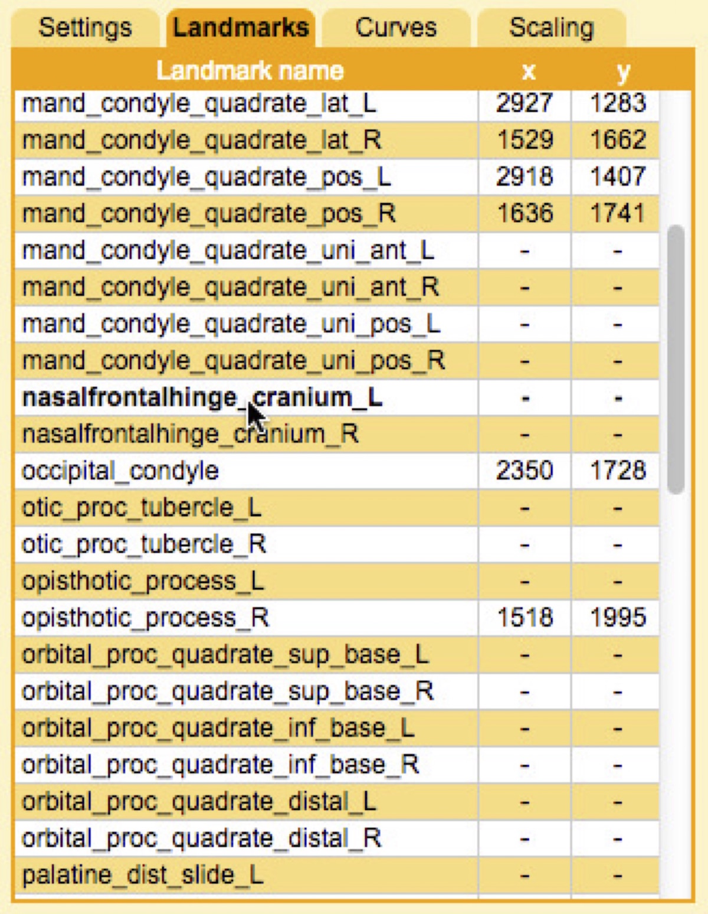
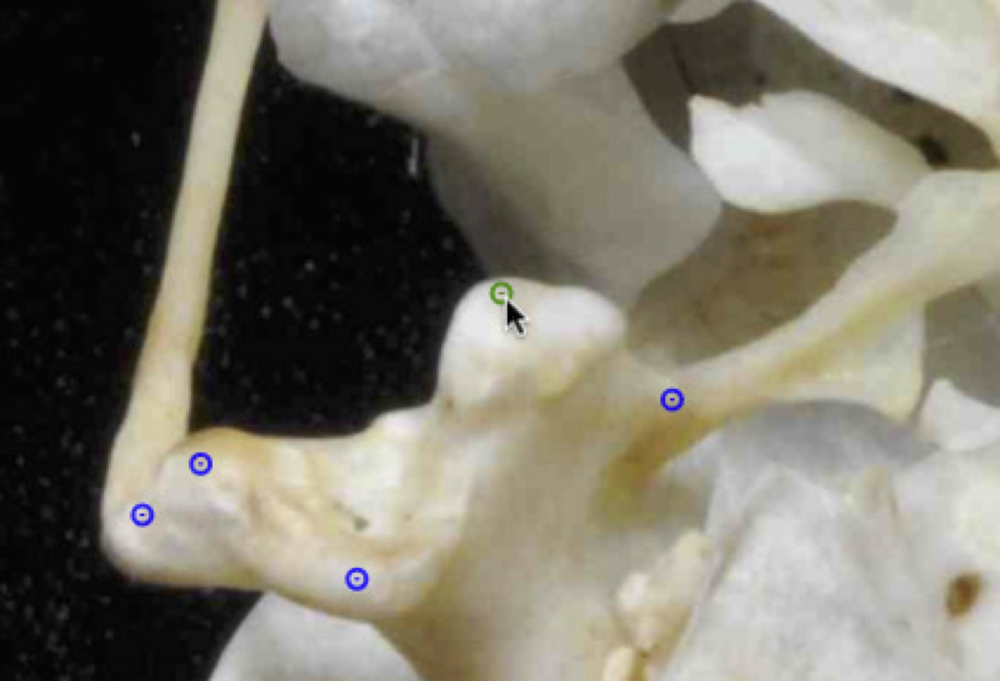
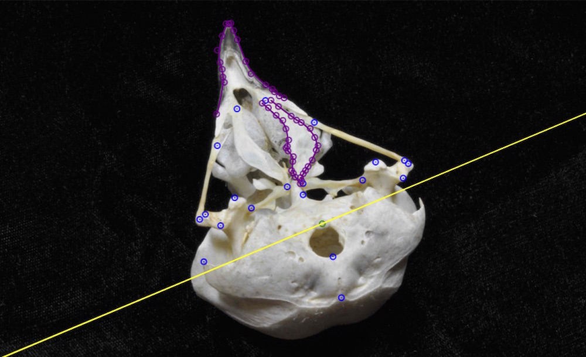

7.3 Digitizing landmarks
To digitize a landmark, click the corresponding row in the Landmarks tab. This will make that landmark the current object.
Move the cursor to where you want to add the landmark and double-click (keyboard shortcut: 'x'). If you've already placed a landmark you can also select it by placing your cursor over the landmark and double-clicking.
To move an already digitized landmark, first select it and then click and drag it with the mouse. You can also use the arrows on the keyboard to move in single pixel increments or hold shift to move in 10 pixel increments.
To delete a landmark, select the landmark and press 'd'. Landmarks with '-' values in the Landmarks panel will be ignored when saving.
For 3D reconstruction, you'll need to digitize the same landmark in both views. Since the views have different perspectives of the object sometimes it's difficult to identify exactly corresponding points. To help with this you can turn on the epipolar line. In the Settings panel click the box next to "Show epipolar line". If you select a landmark, and if that landmark has already been digitized in the other view, the epipolar line will be projected across the image.
This line represents the line along which the landmark should fall if it corresponds exactly to the point digitized in the other view. Recall the epipolar error from the section on determining the calibration accuracy. The mean epipolar error using the checkerboard is typically less than 0.5 pixels and the maximum is typically less than 2 pixels. So assuming the calibration worked propertly, the epipolar line is a reliable aid in identifying corresponding points between views.
Once you've finished digitizing all of the shapes you'd like to digitize be sure to click "Save".